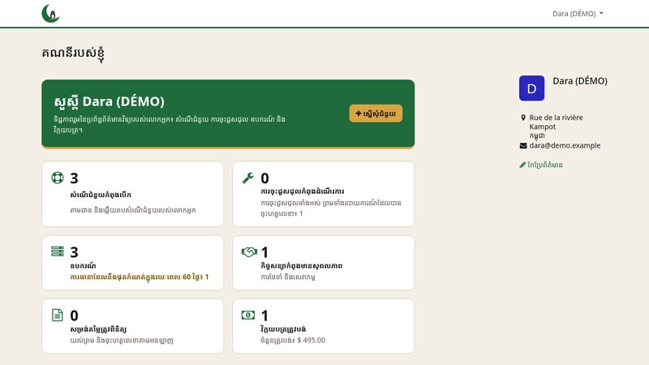
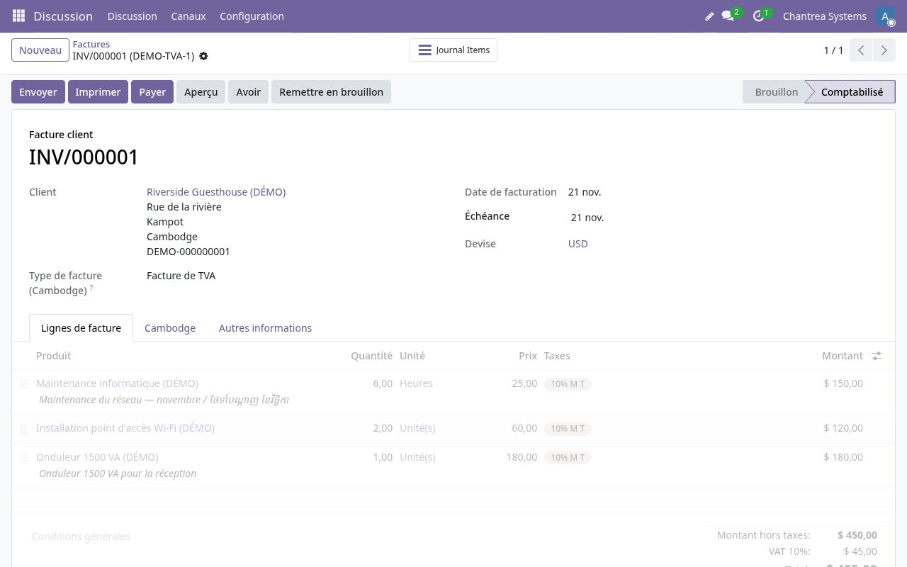
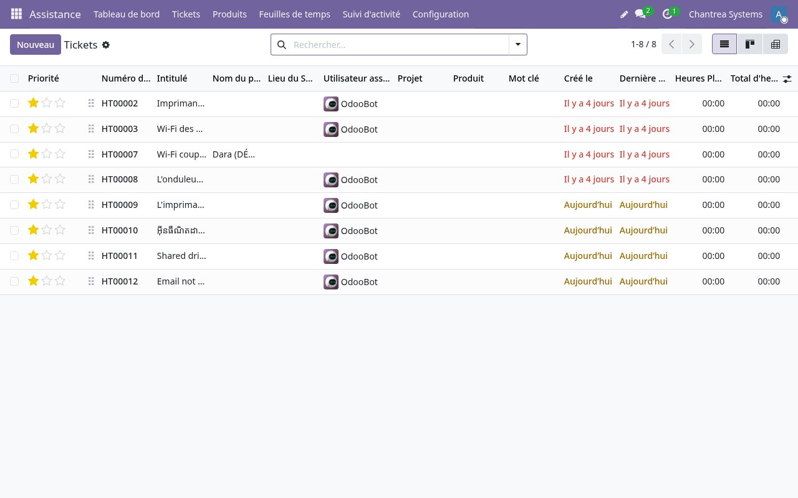
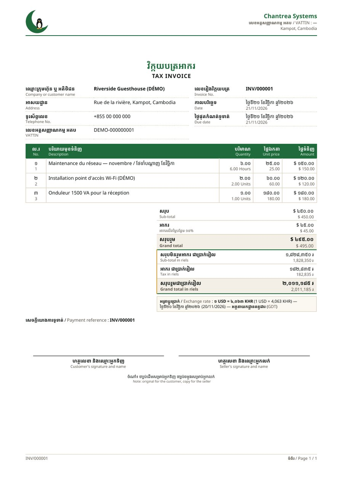
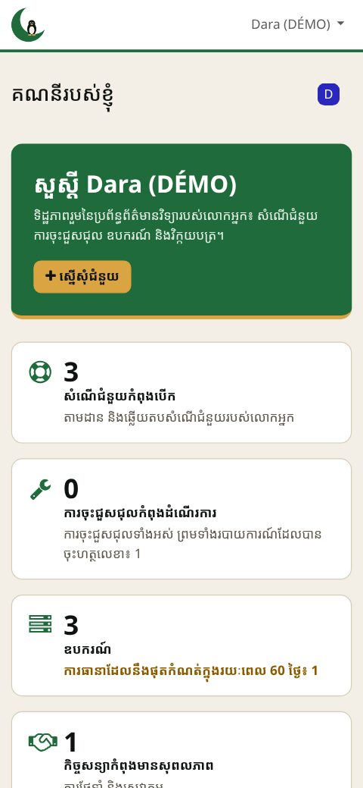
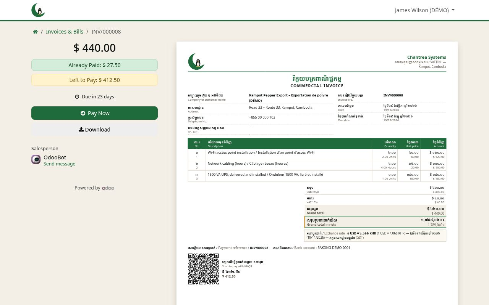
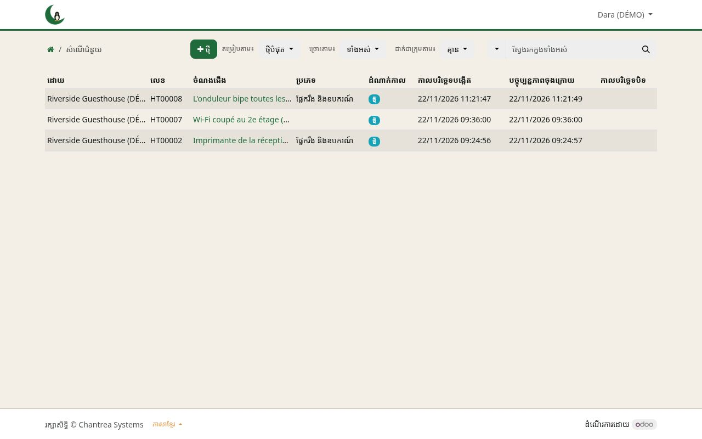

Chantrea Odoo
Every version of this page since 26 Nov 2026, newest first: what changed, and the captures and videos as the page showed them at the time.
Chaque version de cette page depuis le 26 nov. 2026, de la plus récente à la plus ancienne : ce qui a changé, et les captures et vidéos telles que la page les montrait à l’époque.
គ្រប់កំណែនៃទំព័រនេះ តាំងពីថ្ងៃទី 26 វិច្ឆិកា 2026 ពីថ្មីបំផុតទៅចាស់៖ អ្វីដែលបានផ្លាស់ប្តូរ និងរូបថតអេក្រង់ និងវីដេអូ ដូចដែលទំព័របានបង្ហាញនៅពេលនោះ។
Nothing on this page has been regenerated: every capture and video is the file the site published at the time, recovered from its Git history. What the site never published is not here. Since 21 November 2026, every change to the project page adds a version here, and the captures, videos and Last changes it replaces are kept.Rien sur cette page n’a été régénéré : chaque capture et chaque vidéo est le fichier que le site publiait à l’époque, retrouvé dans son historique Git. Ce que le site n’a jamais publié n’y figure pas. Depuis le 21 novembre 2026, chaque changement de la page du projet ajoute ici une version, et les captures, vidéos et derniers changements qu’il remplace sont conservés.គ្មានអ្វីនៅលើទំព័រនេះត្រូវបានបង្កើតឡើងវិញទេ៖ រូបថតអេក្រង់ និងវីដេអូនីមួយៗ គឺជាឯកសារដែលគេហទំព័របានផ្សាយនៅពេលនោះ ដែលបានយកមកវិញពីប្រវត្តិ Git របស់វា។ អ្វីដែលគេហទំព័រមិនដែលផ្សាយ មិនមាននៅទីនេះទេ។ តាំងពីថ្ងៃទី 21 ខែវិច្ឆិកា ឆ្នាំ 2026 ការផ្លាស់ប្តូរនីមួយៗនៃទំព័រគម្រោង បន្ថែមកំណែមួយនៅទីនេះ ហើយរូបថតអេក្រង់ វីដេអូ និងការផ្លាស់ប្តូរចុងក្រោយ ដែលវាជំនួស ត្រូវបានរក្សាទុក។
From the latest to the first.De la plus récente à la première.ពីកំណែចុងក្រោយ ដល់កំណែដំបូង។
-
Nine capturesNeuf capturesរូបថតអេក្រង់ប្រាំបួន
Nine captures on the demo data, taken on a local installation on 26 November: the client area in Khmer on a computer and a phone, its requests and equipment, an English invoice with its riel totals and KHQR code, a Khmer and English tax invoice, and the French back office.
Neuf captures sur les données de démonstration, prises sur une installation locale le 26 novembre : l’espace client en khmer sur ordinateur et sur téléphone, ses demandes et son matériel, une facture en anglais avec ses totaux en riels et son code KHQR, une facture de TVA en khmer et en anglais, et le back-office en français.
រូបថតអេក្រង់ប្រាំបួនលើទិន្នន័យសាកល្បង ដែលថតលើការដំឡើងក្នុងម៉ាស៊ីន នៅថ្ងៃទី 26 ខែវិច្ឆិកា៖ តំបន់អតិថិជនជាភាសាខ្មែរ លើកុំព្យូទ័រ និងទូរស័ព្ទ សំណើ និងឧបករណ៍របស់វា វិក្កយបត្រជាភាសាអង់គ្លេស ជាមួយសរុបជាប្រាក់រៀល និងកូដ KHQR វិក្កយបត្រអាករជាភាសាខ្មែរ និងអង់គ្លេស និងផ្នែកគ្រប់គ្រងជាភាសាបារាំង។
9 captures9 capturesរូបថតអេក្រង់ 9
On the pageSur la pageនៅលើទំព័រ 
On the pageSur la pageនៅលើទំព័រ 
On the pageSur la pageនៅលើទំព័រ 
On the pageSur la pageនៅលើទំព័រ 
On the pageSur la pageនៅលើទំព័រ 
On the pageSur la pageនៅលើទំព័រ 
On the pageSur la pageនៅលើទំព័រ 
On the pageSur la pageនៅលើទំព័រ 
On the pageSur la pageនៅលើទំព័រ -
Its own presentation pageSa page de présentationទំព័របង្ហាញផ្ទាល់ខ្លួន
Chantrea Odoo gets a page of its own in the Projects section, in English, French and Khmer: the idea, the Odoo, OCA and in-house modules, the client area, what is specific to Cambodia (riels, KHQR checked with Bakong, Khmer numerals, the Khmer review), security and operations, and where it stands, with Last changes running to 25 November 2026. The repository publishes no screenshots, so a diagram of its architecture stands in for them.
Chantrea Odoo reçoit sa propre page dans la section Projets, en anglais, en français et en khmer : le principe, les modules d’Odoo, de l’OCA et maison, l’espace client, ce qui est propre au Cambodge (riels, KHQR vérifié auprès de Bakong, chiffres khmers, relecture du khmer), la sécurité et l’exploitation, et l’état du projet, avec des Derniers changements qui vont jusqu’au 25 novembre 2026. Le dépôt ne publie pas de captures : un schéma de son architecture en tient lieu.
Chantrea Odoo ទទួលបានទំព័រផ្ទាល់ខ្លួន នៅក្នុងផ្នែកគម្រោង ជាភាសាអង់គ្លេស បារាំង និងខ្មែរ៖ គំនិតដើម module របស់ Odoo, OCA និង module ផ្ទាល់ខ្លួន តំបន់អតិថិជន អ្វីដែលពិសេសសម្រាប់កម្ពុជា (ប្រាក់រៀល KHQR ដែលផ្ទៀងផ្ទាត់ជាមួយ Bakong លេខខ្មែរ និងការពិនិត្យភាសាខ្មែរ) សុវត្ថិភាព និងប្រតិបត្តិការ និងស្ថានភាពបច្ចុប្បន្ន ជាមួយការផ្លាស់ប្តូរចុងក្រោយរហូតដល់ថ្ងៃទី 25 ខែវិច្ឆិកា ឆ្នាំ 2026។ ឃ្លាំងកូដមិនផ្សព្វផ្សាយរូបថតអេក្រង់ទេ ដូច្នេះដ្យាក្រាមនៃស្ថាបត្យកម្មរបស់វា ត្រូវបានប្រើជំនួស។